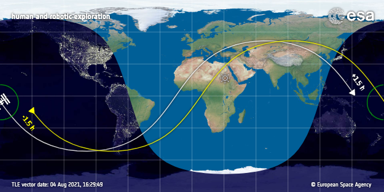
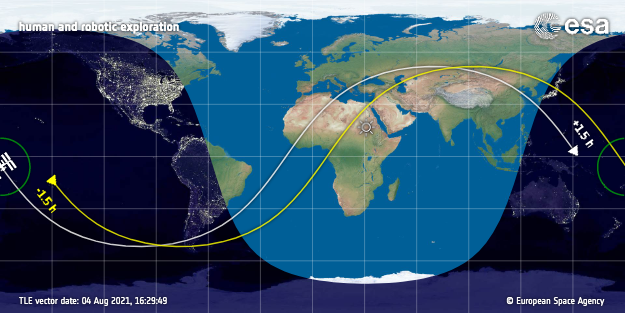

La Estación Espacial Internacional es una estación espacial modular ubicada en la órbita terrestre baja.

La heliofísica es la ciencia de las conexiones físicas entre el Sol y el sistema solar. La NASA define heliofísica como: el nuevo término integral para la ciencia del Sol - Conexión del Sistema Solar la exploración, descubrimiento y comprensión del entorno espacial de la Tierra